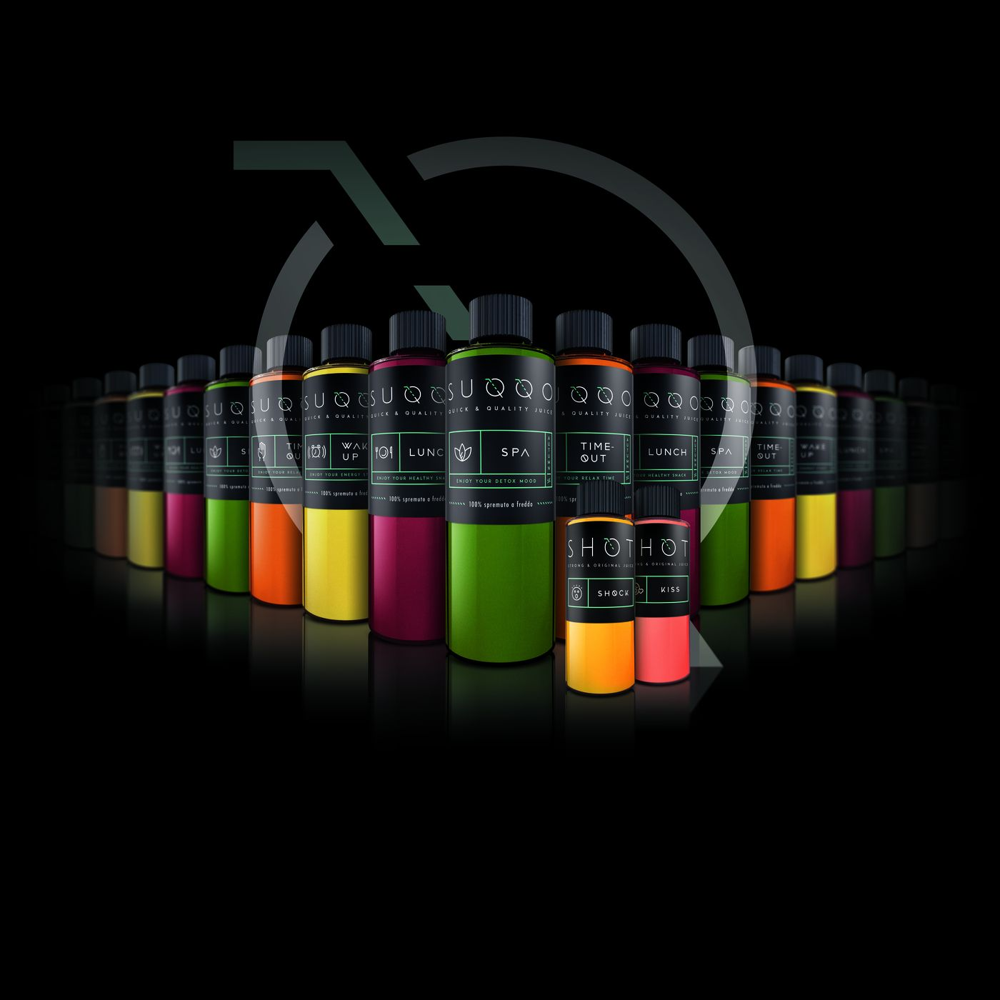

Bacheca · Articoli
SUQQO
SUQQO è una start-up italiana, fondata a Torino nel 2016: produce estratti di frutta e verdura, fresca e di stagione, spremuti a freddo; le ricette sono rinnovate trimestralmente.
SUQQO propone oltre ad una gamma di quattro qualità di prodotto (ricette) in bottiglie da 300 ml anche una gamma di quattro qualità di SHOT (un format di derivazione anglosassone) commercializzato in bottiglie da 50 ml e che costituisce una vera e propria novità nel panorama italiano; infatti riscuote un grande successo.
Il prodotto è trattato tramite High Pressure Processing (sintetizzabile in “pascalizzazione”): un procedimento che consente di aumentare notevolmente la shelf-life del prodotto (25 giorni), mantenendo invariate le proprietà organolettiche.
L’innovativa tecnica di realizzazione permette anche di ridurre in modo sensibile i costi di produzione, per cui i prodotti SUQQO sono commercializzati a prezzi sensibilmente inferiori rispetto ai competitor diretti.
La proposta è la risposta tempestiva al contesto ambientale che vede sempre più consumatori avvicinarsi ai Juices, che rappresentano la risposta adeguata alle necessità e volontà di aumentare il consumo di vegetali.
Il prodotto, pur recente, è già distribuito attraverso importanti canali, sia in ambito “grande distribuzione di qualità”, sia a livello HO.RE.CA.
I prodotti godono di rotazione veloce, derivata dal trend sempre più diffuso e trasversale di ricercare prodotti salutari, di qualità e pronti al consumo.
